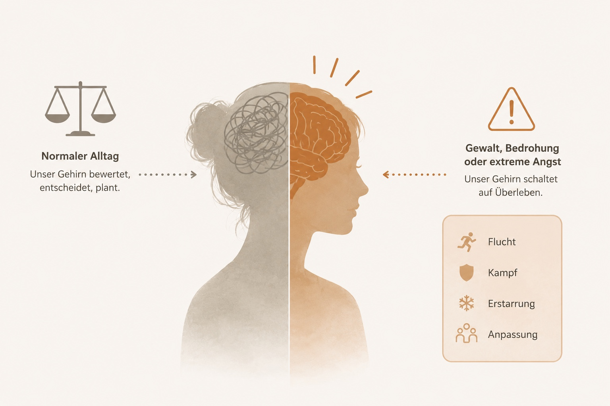

Manchmal dauert es Jahre, bis wir verstehen, was uns eigentlich widerfahren ist. Hier findest du Informationen, Orientierung und Unterstützung – ohne Druck, ohne Bewertung und in deinem eigenen Tempo.
Jeder Weg ist unterschiedlich. Du entscheidest selbst, welche Informationen dir gerade helfen.
Du brauchst Unterstützung oder weißt nicht, welcher Schritt der richtige ist? Hier findest du Anlaufstellen, Notrufnummern und erste Orientierung.
Warum reagiere ich so? Was passiert bei Trauma? Warum erinnert sich mein Gehirn anders? Hier findest du verständliche Erklärungen.
Warum gibt es diese Website? Wer steckt dahinter? Und welche Idee verfolgt trotzdem.wahr?
Antworten auf Fragen, die viele Betroffene beschäftigen. Kurz, verständlich und wissenschaftlich fundiert.

Nach belastenden Erfahrungen arbeitet unser Gehirn häufig anders als zuvor. In Momenten großer Angst übernimmt der Überlebensmodus. Das Gehirn entscheidet dann nicht bewusst, sondern versucht in erster Linie, uns zu schützen.
Deshalb reagieren viele Menschen noch lange nach der Gewalt mit Angst, Erstarren, Schlafproblemen, innerer Unruhe oder Erinnerungslücken. Diese Reaktionen sind keine Schwäche. Sie sind verständliche Folgen außergewöhnlicher Belastungen.
Mehr verstehen →Zu wissen, warum Körper und Gehirn heute noch reagieren, nimmt das Erlebte nicht weg. Aber es kann helfen, sich selbst mit mehr Verständnis zu begegnen.
Jeder Mensch verarbeitet belastende Erfahrungen auf seine eigene Weise. Vielleicht erkennst du dich in einigen Informationen wieder. Vielleicht brauchst du Zeit. Beides ist in Ordnung. Du entscheidest selbst, welche Schritte sich für dich richtig anfühlen.